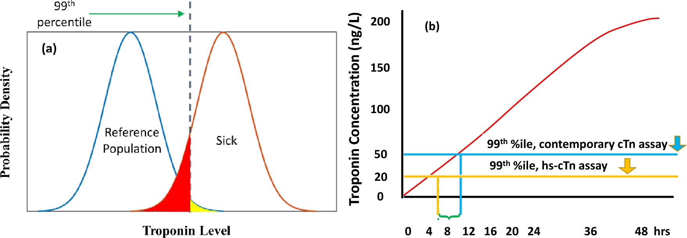
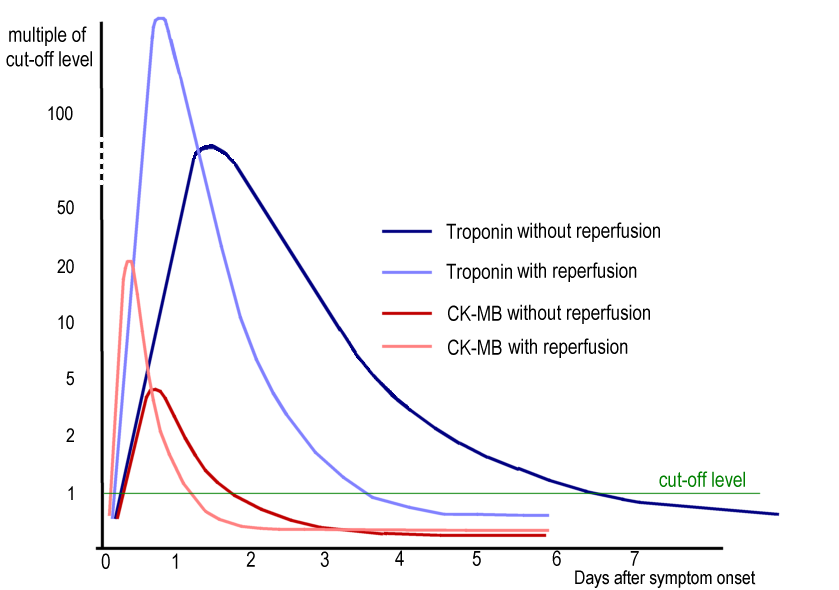

原理 Principle
它到底在量什麼？為什麼這個數字能反映那件事？
Troponin I 與 T 是心肌專一的收縮調節蛋白，正常時鎖在肌小節裡。心肌細胞死亡（膜完整性喪失）→ troponin 釋放到血液。「高敏感度（hs）」的定義是：在超過 50% 的健康人身上都能測到可量化的濃度——正是因為測得到基礎值，才有辦法比較「1 小時後變了多少」。
flowchart TD A["心肌缺血"] --> B["細胞膜完整性喪失"] B --> C["troponin 釋出<br/>進入血中"] C --> D["濃度上升<br/>再緩慢下降"] D --> E["超過參考上限<br/>＝心肌損傷"] D --> F["1 小時變化量<br/>急性 vs 慢性"] classDef key fill:#263238,stroke:#000,color:#fff,font-weight:bold class E,F key

右圖直接比較偵測門檻：hs-cTn 的低門檻（黃線）比 contemporary assay（藍線）早約 4–5 小時跨過；最左側尚未跨線就是「太早抽」的盲區。99th percentile 是 assay／參考族群特異的臨床決策線，不是所有試劑都固定同一數值。Source: Kim et al., Scientific Reports 2023, Figure 1（CC BY 4.0）。
完整動力學：再灌流後峰值更早、更尖；未再灌流時上升較慢、維持較久。綠線是 assay cut-off 的示意，實務上急性心肌梗塞仍要看「超過第 99 百分位」且有 rise/fall 與缺血證據。Source: Wikimedia Commons — AMI bloodtests engl, Mikael Häggström（CC BY-SA 3.0）。什麼時候做
- 當你想回答「這個病人的心肌有沒有壞死」時
- 疑似 ACS（與 EKG 同時開，但不能為了等它而延遲再灌流）
- 需要區分 UA 與 NSTEMI，或需要客觀證據支持缺血診斷時
- 已知 troponin 會升高的重症（敗血症、肺栓塞、心衰惡化）中，用來量化心肌受累程度與風險——不是用來診斷 ACS
怎麼做 / 病人準備
| 項目 | 內容 |
|---|---|
| 採樣時機 | 0 小時（到院時）＋ 1 小時（或 0/2h、0/3h，依 assay 的官方演算法） |
| 一致性 | 同一台儀器、同一個 assay。cTnI 與 cTnT 的數字不可互換比較 |
| 病人準備 | 不需空腹、不需停藥 |
| 症狀時間 | 記錄「症狀發作到抽血」的時數——這是判讀「早期陰性」能不能信的唯一依據 |
| 干擾（方向不同，別記反） | 假性升高：巨大 troponin 複合體（macrotroponin）、嗜異性抗體。 假性降低：biotin（保健食品常見高劑量）會干擾 streptavidin–biotin 系統的 assay，包括 Roche hs-cTnT——這是製造假陰性的風險，FDA 有專門警示。溶血在 Roche 與 Ortho 平台上也讓 cTnT 回收率下降（方向依 assay 而異，不是一律升高） |
判讀
① 三分區演算法（0/1h）
| 分區 | 意義 | 下一步 |
|---|---|---|
| Rule-out | 0 小時極低值（且症狀已持續足夠久），或 0 小時偏低且 1 小時變化量極小 | 若臨床風險也低 → 可考慮出院前的進一步分層 |
| Observe（灰色區，人數最多） | 介於兩者之間 | 再驗 3 小時（或更久） ＋ serial EKG ＋ 臨床分數；必要時影像 |
| Rule-in | 0 小時明顯升高，或 1 小時變化量大 | 當 NSTE-ACS 處理，走 ACS 的風險分層與導管時機 |
② 心肌損傷 vs 心肌梗塞 —— 最重要的一格
| 定義 | 處置方向 | |
|---|---|---|
| 心肌損傷（myocardial injury） | troponin > 99th percentile。急性＝有 rise/fall；慢性＝持續偏高但無明顯變化 | 找原因；不等於要抗栓 |
| 心肌梗塞（MI） | 急性心肌損傷 ＋ 至少一項缺血證據：症狀、新的缺血性 EKG 變化、新病理性 Q 波、影像顯示新的節段運動異常、導管見血栓 | 依 Type 決定（見下） |
③ Type 1 vs Type 2：陽性之後必答的問題
| Type 1 | Type 2 | |
|---|---|---|
| 機制 | 斑塊破裂／侵蝕 ＋ 血栓 | 供需失衡，無急性斑塊事件 |
| 典型情境 | 休息時胸痛、動態 ST-T 變化 | 快速心律不整、嚴重貧血、休克／低血壓、敗血症、高血壓危症、嚴重低血氧 |
| Troponin 幅度 | 通常較高、rise/fall 明顯 | 常較低，但可以很高 |
| 處置 | 抗栓 ＋ 血管重建（見 ACS） | 治病因（控心律、輸血、抗生素、升壓）；抗栓益處不明而出血風險真實 |
完整的五個 Type（含 PCI／CABG 相關）在 CAD。
④ 非 ACS 的 troponin 升高
| 類別 | 原因 |
|---|---|
| 心臟結構／功能 | 急性心衰惡化、心肌炎、心包心肌炎、Takotsubo↗、瓣膜疾病（尤其重度 AS）、浸潤性疾病（amyloidosis）、心臟移植排斥 |
| 心律與電 | 快速心房顫動／SVT／VT、電擊或去顫後 |
| 醫療處置 | PCI↗、電生理消融、心臟手術、心臟撞擊傷 |
| 循環／呼吸 | Pulmonary embolism、肺高壓、敗血症與各類休克、嚴重呼吸衰竭、主動脈剝離 |
| 全身 | 嚴重貧血、橫紋肌溶解伴心肌受累、大範圍燒燙傷、中風與顱內出血、化療心毒性、極端耐力運動 |
| 慢性穩定升高 | CKD（尤其 hs-cTnT）、慢性心衰、左心室肥厚 → 基礎值高但 delta 小 |
⑤ MINOCA
troponin ＋、符合 MI 定義，但導管顯示冠脈無明顯阻塞（<50%）。機制包括斑塊侵蝕／破裂但已自溶、自發性冠脈剝離（SCAD）、冠脈栓塞、微血管功能失調。 診斷前必須排除「MINOCA 的假面」——Takotsubo↗、心肌炎，這些處置完全不同。
與相關檢查的取捨
| 檢查 | 回答什麼 | 為什麼不用它取代 troponin |
|---|---|---|
| CK-MB | 心肌損傷，但特異性與敏感度都不如 hs-cTn；上升晚、回落快 | 已不作為第一線；回落快這一點在懷疑「再梗塞」時還有一點殘餘價值 |
| Myoglobin／LDH／AST | 完全非專一 | 已淘汰 |
| EKG ischemia | 「現在有沒有急性完全阻塞」——秒級 | 決定要不要立刻進導管室的是 EKG，不是 troponin |
| Echocardiography | 節段運動異常、EF、機械性併發症、mimics | 提供 MI 定義所需的「影像缺血證據」；也用來排除 Takotsubo、心包填塞 |
| BNP↗ | 心室壁張力（心衰），不是壞死 | 兩者常同時升高但意義不同 |
禁忌與陷阱
相關連結
- ACS — troponin 陽性之後的分流、風險分層與導管時機
- CAD — 名詞地圖（UA vs NSTEMI 這條軸）、MI 五個 Type
- EKG ischemia — 另一條軸：有沒有急性完全阻塞
- Chest pain↗ — 主訴層的 can't-miss 與第一批 order
- Echocardiography、Takotsubo↗、Pulmonary embolism、BNP↗